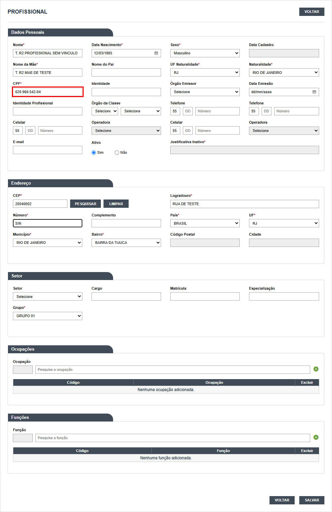
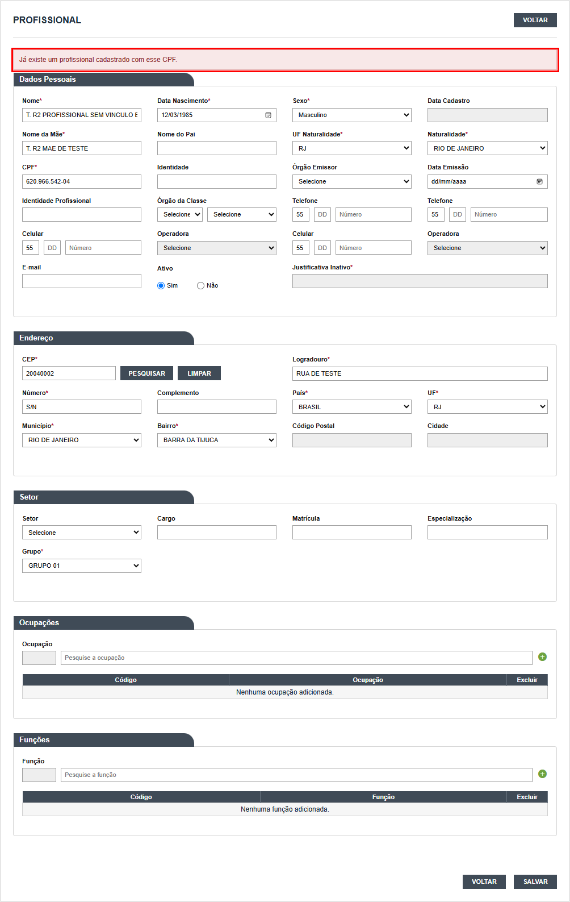
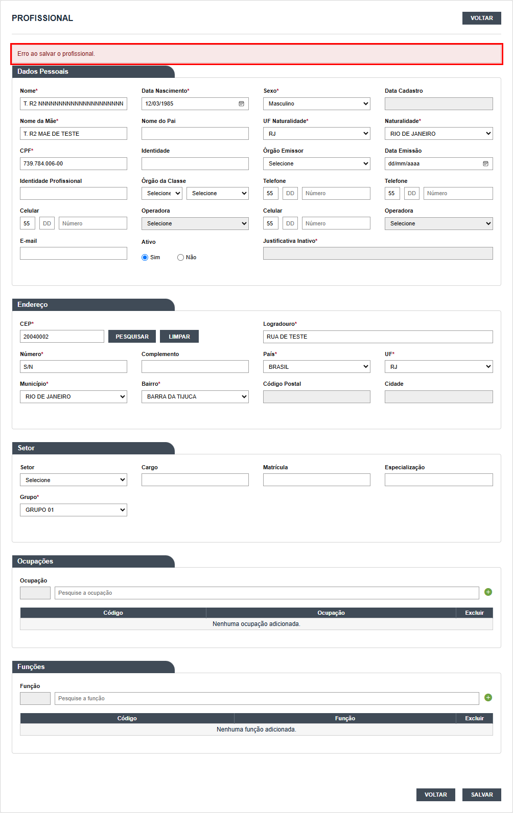
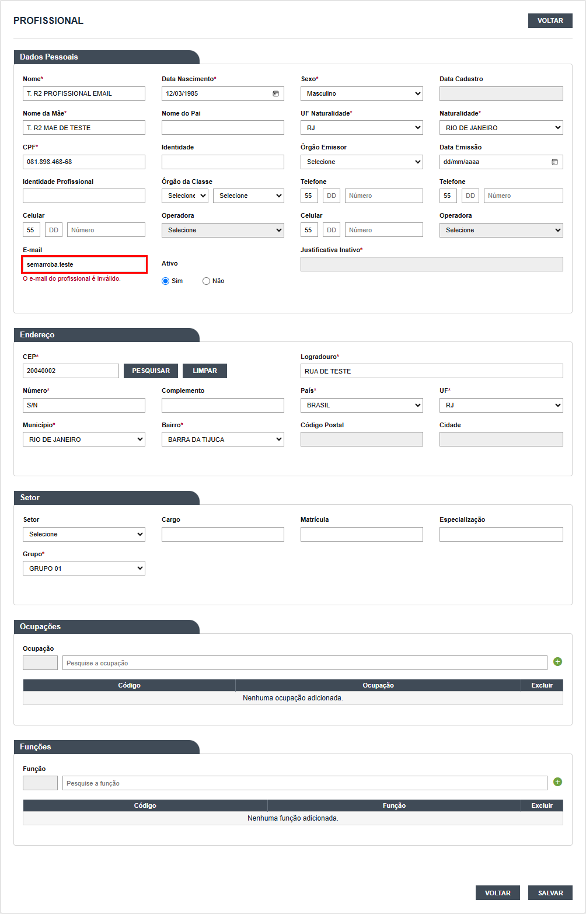
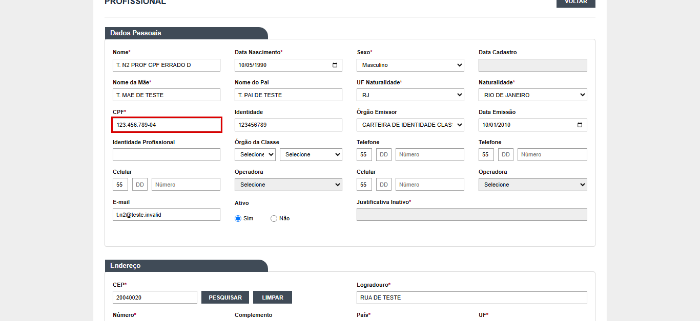
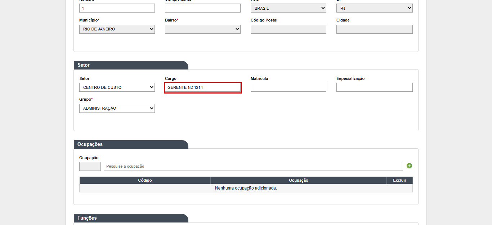
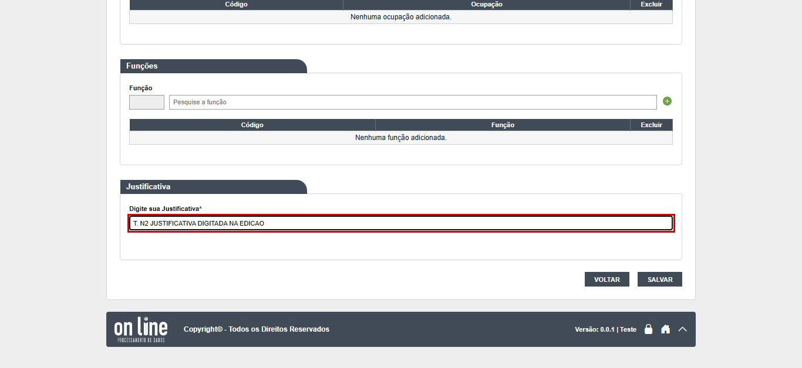
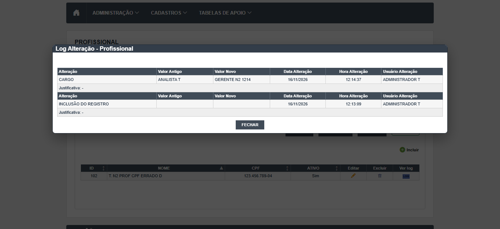
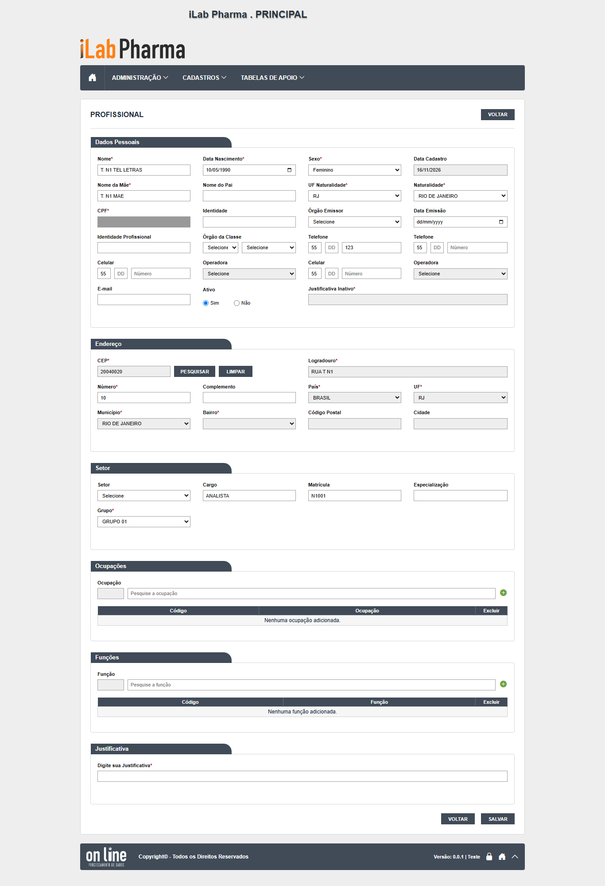

Menu: Administração · Situação do manual: Em ajuste (prints e conferência de 17/11/2026) · Fonte dos prints: versão nova.
Cuidados e falhas conhecidas
| Defeito | Gravidade | O que acontece | Situação na revalidação de 16/11/2026 |
|---|---|---|---|
| DV-PRI-N-015 | Alta | Editar não exige justificativa, a justificativa digitada não é gravada ("Justificativa: -" no histórico) e o telefone alterado não entra no histórico | Repete em 16 e 17/11/2026 (imagens nos passos 8 e 11) |
| DV-PRI-N-016 | Alta | O CPF não é validado: dígito errado, sequência repetida (555.555.555-55) e letras são aceitos; só o CPF repetido é recusado | Repete em 16 e 17/11/2026 (CPF de dígito errado gravado) |
| DV-PRI-N-011 | Alta | A API não conferia as funções do perfil | Corrigido no servidor (403) |
| DV-PRI-N-033 | Média | Obrigatórios sem padrão entre as telas: a lista de grupos oferece grupos inativos; função inativa aparece só com o código | Repetia em 04/11; sem reteste de 16 e 17/11 |
| DV-PRI-N-039 | Média | O Excel ignora o filtro e traz Login, CPF, E-mail, Perfil e outras colunas de todos os profissionais; o PDF respeita o filtro mas traz "SUA LOGO AQUI" | Repete em 17/11/2026 (filtro com 11 profissionais, planilha com 99 linhas; em outra medida, filtro com 1 registro e 98 profissionais no Excel). Ponto de LGPD |
| DV-PRI-N-046 | Baixa | O campo aceita 270 caracteres no nome, mas o servidor só grava até 250 e responde com mensagem genérica | Repete em 17/11/2026 ("Erro ao salvar o profissional.") |
| DV-PRI-N-047 | Média | Datas impossíveis são aceitas: nascimento em 2099 e em 1850; emissão da identidade antes do nascimento | Sem reteste de 16 e 17/11 |
| DV-PRI-N-048 | Baixa | Telefone com letras é aceito e gravado "limpo" ("ABC123" vira "123", DDD vazio), sem aviso | Repete em 16/11 |
| DV-PRI-N-058 | Média | O Relatório de usuário (aberto pela lista) mostra o campo Ativo em branco em 68 de 68 profissionais | No PDF da lista desta tela, em 17/11/2026, o campo Ativo veio preenchido (SIM/NÃO): a ficha precisa ser conferida. Evidência antiga: print PN401-P04 do manual de "Visualização de relatórios" |
| R2A-PRO-01 | Baixa | Candidato a defeito (rascunho R2A-PRO-01, a promover): o pop-up de sucesso da inclusão e o da exclusão aparecem duplicados, e é preciso clicar em OK duas vezes. Não ocorre em Ambientes nem em Equipamentos | Novo em 17/11/2026 (imagens nos passos 6 e 10) |
| R2A-PRO-02 | Média | Candidato a defeito (rascunho R2A-PRO-02, a promover): o botão PESQUISAR do CEP não preenche logradouro, UF, município nem bairro, e não mostra mensagem de CEP não encontrado | Novo em 17/11/2026 (imagem no passo 4) |
| R2A-PRO-03 | Baixa | Candidato a defeito (rascunho R2A-PRO-03, a promover): a faixa "Já existe um profissional cadastrado com esse CPF." não some depois de corrigir o CPF e salvar de novo com outro erro (e-mail ou nome longo), o que confunde o usuário | Novo em 17/11/2026 (sem print dedicado; o print PNR2-profissional-24 mostra a mensagem) |

Evidência do DV-PRI-N-016 (17/11/2026): o formulário com um CPF de dígito errado (inventado), que foi aceito e gravado.

Faixa "Já existe um profissional cadastrado com esse CPF." (a mensagem do CPF repetido; base do R2A-PRO-03).

Evidência do DV-PRI-N-046: nome com 270 caracteres e a faixa "Erro ao salvar o profissional.".

"O e-mail do profissional é inválido." aparece uma vez, sob o campo.

Evidência do DV-PRI-N-016: o formulário com o CPF 123.456.789-04 (dígito errado) antes de salvar.

Evidência do DV-PRI-N-015: parte de baixo do formulário em edição, com Cargo em destaque vermelho e Grupo* preenchido, e os quadros Ocupações e Funções.

Evidência do DV-PRI-N-015: a justificativa digitada em destaque vermelho, que depois não é gravada.

Evidência do DV-PRI-N-015: só o CARGO ("ANALISTA T" para "GERENTE N2 1214") tem linha; o telefone não aparece e a justificativa é "-".

Evidência do DV-PRI-N-048: o registro reaberto mostra o telefone gravado só com os números.
O que foi corrigido na revalidação de 16/11/2026: apenas o DV-PRI-N-011 (permissão no servidor). Os defeitos de histórico (N-015), de CPF (N-016), de telefone (N-048), do Excel (N-039) e do nome longo (N-046) continuam (conferidos de novo em 17/11/2026), e há três candidatos novos (R2A-PRO-01 a 03). Recomendação de uso: confira o CPF e o telefone digitados antes de salvar, e registre o motivo de cada alteração por outro meio, pois a justificativa não é gravada.
Diferenças em relação ao legado
| Ponto | Legado (usuario_lst, usuario_ed) | Versão nova | Classe |
|---|---|---|---|
| Incluir profissional e conta | Passou | Funciona (criados 11 vezes); histórico com "INCLUSÃO DO REGISTRO" | Igual (CT-PRI-040) |
| Ordem das recusas | Pergunta de confirmação antes da conferência dos campos | Mensagem por campo antes da pergunta | Igual no caso; ordem melhor |
| CPF | Valida os dígitos e recusa sequências ("O CPF informado é inválido!") | Não valida | Regressão (DV-PRI-N-016) |
| Editar com justificativa | Exige e grava a justificativa | Não exige; não grava; telefone fora do histórico | Regressão (DV-PRI-N-015) |
| Cargo no histórico | Saía em branco | Sai com o valor novo | Melhoria |
| Inativar | Exige justificativa | Exige justificativa | Igual (CT-PRI-045) |
| Excluir sem histórico | Passou (falta o DBA) | Exclui com justificativa e some da lista | Igual (CT-PRI-047) |
| Excluir com conta, registros, função ou ocupação | Excluía sem avisar (DV-PRI-006) | Recusa ("existem associações"), sem dizer qual; vale também para quem só tem função e ocupação | Melhoria (CT-PRI-048) |
| Excluir sem justificativa | Faixa antes da pergunta | "A justificativa é obrigatória." | Igual (CT-PRI-049) |
| Pesquisa por acento | Não ignorava (DV-PRI-008) | Ignora acento (Fase 2) | Melhoria |
| Permissão no servidor | Salvar e excluir não conferiam permissão | Corrigido em 16/11/2026 | Melhoria (DV-PRI-N-011) |
| Excel e PDF | O Excel perdia filtros de Grupo e Função | O Excel ignora todo o filtro e traz Login, CPF, E-mail, Perfil e outras colunas | Igual, agravado (DV-PRI-N-039) |
| Datas e telefone | Nascimento inválido recusado | Datas impossíveis aceitas; telefone com letras limpo | Regressão (DV-PRI-N-047 e N-048) |
Contradições encontradas: o resumo da tela dizia "15 campos obrigatórios", enquanto o caso BA-PRO-03 (execucao/2026-11-09-bloco-a/combinacoes-bloco-a.csv) lista 14 mensagens; em 17/11/2026 a tela mostrou 14, e esse número vale. A ficha DV-PRI-N-009 inclui a pesquisa de Perfil entre as que não ignoram acento, mas as observações da Fase 2 dizem que Profissional e Perfil ignoram. O legado dizia (usuario_ed.aspx.cs:1980) que o CPF é validado; a ficha DV-PRI-N-016 registra que o comportamento do legado não foi rodado na tela.
Prints que faltam
Em 17/11/2026 o robô percorreu todo o passo a passo e refez os prints. Falta só:
| Passo ou estado | O que mostrar | Por quê |
|---|---|---|
| Mensagem de CPF repetido que não some (R2A-PRO-03) | A faixa antiga junto com o novo erro, depois de corrigir o CPF | Observada durante os testes, sem print dedicado |
| Excel da lista | As colunas e as linhas da planilha com o filtro ativo | O arquivo não foi anexado; só há a contagem de linhas (98 ou 99 no Excel contra 1 ou 11 na lista) |
| Lista do perfil só de consulta, com as dicas de Excluir e LOG | Ícones apagados com as dicas "Sem permissão para excluir profissional" e "Sem permissão para consultar log" | O print PNR2-profissional-31 mostra o lápis e o Incluir; as dicas de Excluir e LOG foram vistas por outra sessão, sem print |
| Histórico depois da exclusão | O histórico do profissional excluído | Não foi possível: o profissional some da lista e do histórico, e a tela não tem outro caminho (ponto para validar com o DBA) |